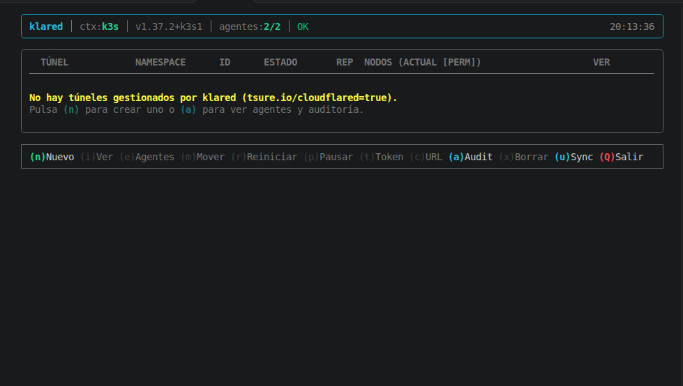

Pre-Flight y modo --check
Valida kubectl, contexto activo, agentes worker Ready (excluyendo
control-plane), permisos RBAC y lectura de namespaces antes de abrir la TUI.
klared es una interfaz TUI ligera para administrar túneles Cloudflare
(remotely-managed por token) en tu clúster k3s: asignación selectiva por agente,
failover rápido, token seguro vía stdin y compatibilidad nativa con
k3access bajo el contrato tsure.io/*.

Sin operadores, sin CRDs ni Ingress adicionales: cada túnel es solo un Secret y un
Deployment bien afinado (~20–50 MB de RAM por réplica).
--check
Valida kubectl, contexto activo, agentes worker Ready (excluyendo
control-plane), permisos RBAC y lectura de namespaces antes de abrir la TUI.
Combina maxUnavailable: 0, readinessProbe en /ready:2000,
topologySpreadConstraints y tolerations de 30 s. Si un rollout expira,
revierte con rollout undo.
stdin
El token nunca pasa por argumentos de CLI ni aparece en ps o logs: se inyecta por
stdin a kubectl apply -f - y se extrae automáticamente si pegas el
comando completo de Zero Trust.
tsure.io/* + k3access
Lee en solo lectura tsure.io/node-selector del namespace, calcula la intersección de
agentes válidos y marca el namespace con tsure.io/klared-<id>=true.
Si una instalación falla a mitad, limpia Deployment, Secret y labels automáticamente. Además audita
labels huérfanos en nodos y namespaces con limpieza manual confirmada (LIMPIAR).
Compilado con esbuild + node --build-sea para Linux x64 y Windows x64.
El instalador curl detecta la última release, valida SHA-256 y
actualiza en sitio.
klared en acción
Haz clic en cualquier captura para ampliarla en pantalla completa y navegar con
← / →.
k3access
Cada túnel recibe un ID hex único (a3f9c2) que aísla sus nodos permitidos y su marca en el
namespace, permitiendo incluso múltiples túneles en el mismo namespace sin interferencias.
# 1. Nodos permitidos (fuente de verdad)
tsure.io/cloudflared-a3f9c2: "true"
# 2. Namespace (visible en HERRAMIENTAS de k3access)
tsure.io/klared-a3f9c2: "true"
# 3. Secret y Deployment propios de klared
metadata:
name: cloudflared-mi-app
labels:
tsure.io/cloudflared: "true"
annotations:
tsure.io/tunnel-id: "a3f9c2"
tsure.io/agents: "k3s-agent1,k3s-agent2"
spec:
strategy.rollingUpdate.maxUnavailable: 0
tolerations[].tolerationSeconds: 30klared etiqueta primero los agentes
nuevos, ejecuta rollout restart + espera /ready para evacuar sin corte los
nodos descartados, y solo al final retira el label antiguo y actualiza la annotation espejo.
Comprueba qué agentes habilita klared combinando el estado de tus nodos con la afinidad
de solo lectura definida en k3access:
curl en segundos
El binario autocontenido no requiere Node.js: solo necesitas kubectl configurado en tu
equipo. El script consulta siempre la última versión publicada en GitHub Releases,
verifica su SHA-256 y actualiza automáticamente si vuelves a
ejecutarlo.
curl -fsSL https://raw.githubusercontent.com/Tsurematsu/klared/main/scripts/install.sh | bash# Validar kubectl, agentes y RBAC sin abrir la TUI
klared --check
# Abrir el dashboard interactivo
klared
# Actualizar en el futuro (mismo comando) o forzar reinstalación
curl -fsSL https://tsurematsu.github.io/klared/install.sh | bash -s -- --forcecurl.exe -fsSL https://raw.githubusercontent.com/Tsurematsu/klared/main/scripts/install.ps1 -o "$env:TEMP\klared-install.ps1"; powershell -ExecutionPolicy Bypass -File "$env:TEMP\klared-install.ps1"irm https://raw.githubusercontent.com/Tsurematsu/klared/main/scripts/install.ps1 | iex
# Después abre una nueva terminal y ejecuta:
klared --check
klaredgit clone https://github.com/Tsurematsu/klared.git
cd klared
npm install
npm run build
npm start# Chequeo Pre-Flight + resumen sin abrir TUI
node dist/index.js --check
# Typecheck y pruebas unitarias (19 tests)
npm run typecheck && npm test
# Generar ejecutables autocontenidos en build/
npm run build:seaTodas las operaciones de tus túneles al alcance de una sola tecla.